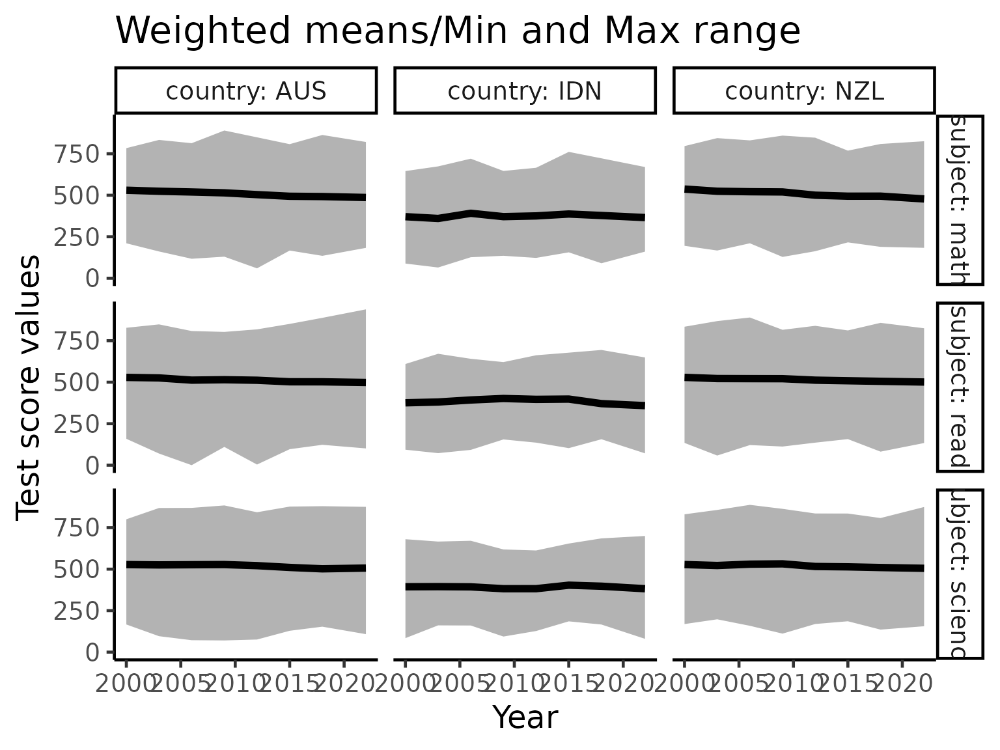
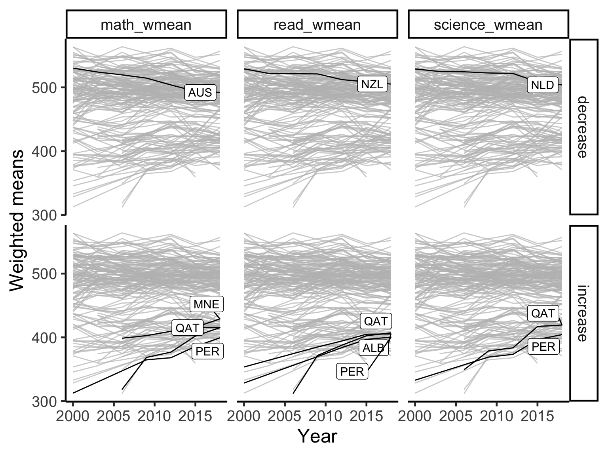

Exploring temporal trends
The Freemasons
2020-05-31
exploring_time.RmdTime series visaulisation
We will first visualise the time series trend of countries, regardless of when and how long they have participated in the PISA study.
w_mean = function(x, w){weighted.mean(x = x, w = w, na.rm=TRUE)} stu_summ = student %>% group_by(year, country) %>% summarise_at(.vars = vars(math, read, science), .funs = list(wmean = ~w_mean(., w = stu_wgt), min = ~min(., na.rm = TRUE), max = ~max(., na.rm = TRUE))) %>% ungroup() %>% dplyr::mutate(year = year %>% as.character() %>% as.integer) stu_wmean_long = stu_summ %>% select(year, country, contains("wmean")) %>% pivot_longer(cols = contains("wmean"), names_to = "wmean_names", values_to = "wmean_values") stu_wmean_long %>% ggplot(aes(x = year, y = wmean_values, group = country)) + geom_line() + facet_wrap(~wmean_names) + labs(x = "Year", y = "Weighted mean values")

## Uncomment this to make interactive # library(plotly) # ggplotly()
Australia, New Zealand, Indonesia
We focus on three countries here. The dark line is the weighted mean score of each country for each subject. The shading indicates the min and max score of a given year.
stu_summ_long2 = stu_summ %>% filter(country %in% c("AUS", "NZL", "IDN")) %>% pivot_longer(cols = math_wmean:science_max, names_to = "names", values_to = "values") %>% separate(col = names, into = c("subject", "statistics"), sep = "_") %>% pivot_wider(names_from = "statistics", values_from = "values") stu_summ_long2 #> # A tibble: 63 x 6 #> year country subject wmean min max #> <int> <fct> <chr> <dbl> <dbl> <dbl> #> 1 2000 AUS math 530. 211. 784. #> 2 2000 AUS read 529. 159 828. #> 3 2000 AUS science 527. 167. 800. #> 4 2000 IDN math 371. 88.5 646. #> 5 2000 IDN read 376. 93.3 610. #> 6 2000 IDN science 394. 84.4 680. #> 7 2000 NZL math 537. 195. 796. #> 8 2000 NZL read 529. 134. 834. #> 9 2000 NZL science 528. 169. 830. #> 10 2003 AUS math 524. 161. 833. #> # … with 53 more rows stu_summ_long2 %>% ggplot(aes(x = year, y = wmean)) + geom_ribbon(aes(ymin = min, ymax = max), fill = "grey70") + geom_line(colour = "black", size = 2) + facet_grid(subject~country, labeller = label_both) + labs(x = "Year", y = "Test score values")

brolgar visualisations
Calculating slope
complete_nations = stu_summ %>% group_by(country) %>% filter(n() == 7) %>% ungroup() %>% mutate(year_subtract = year - 2000) %>% as_tsibble(key = country, index = year_subtract) math_slope = complete_nations %>% ## Filter for countries participated in all 7 PISA studies select( year_subtract, country, math_wmean) %>% key_slope(math_wmean ~ year_subtract) math_slope %>% ggplot(aes(x = .intercept, y = .slope_year_subtract)) + geom_point() + geom_label_repel(aes(label = country)) + labs(x = "Weighted mean math score in 2000", y = "Avg. increase in weighted mean score every year")

math_slope_near <- math_slope %>% keys_near(key = country, var = .slope_year_subtract) math_slope_near #> # A tibble: 5 x 5 #> country .slope_year_subtract stat stat_value stat_diff #> <fct> <dbl> <fct> <dbl> <dbl> #> 1 NZL -2.48 min -2.48 0 #> 2 CAN -1.12 q_25 -1.12 0.00226 #> 3 HUN -0.349 med -0.363 0.0145 #> 4 IDN 0.707 q_75 0.727 0.0208 #> 5 PRT 2.36 max 2.36 0 # math_features <- complete_nations %>% # features(math_wmean, feat_brolgar) # # math_features math_monotone = complete_nations %>% features_at(.var = vars(math_wmean), features = feat_monotonic) math_monotone #> # A tibble: 34 x 5 #> country math_wmean_incre… math_wmean_decre… math_wmean_unva… math_wmean_mono… #> <fct> <lgl> <lgl> <lgl> <lgl> #> 1 AUS FALSE TRUE FALSE TRUE #> 2 AUT FALSE FALSE FALSE FALSE #> 3 BEL FALSE FALSE FALSE FALSE #> 4 BRA FALSE FALSE FALSE FALSE #> 5 CAN FALSE FALSE FALSE FALSE #> 6 CHE FALSE FALSE FALSE FALSE #> 7 CZE FALSE FALSE FALSE FALSE #> 8 DEU FALSE FALSE FALSE FALSE #> 9 DNK FALSE FALSE FALSE FALSE #> 10 ESP FALSE FALSE FALSE FALSE #> # … with 24 more rows p1 = math_monotone %>% right_join(complete_nations, by = "country") %>% ggplot(aes(x = year, y = math_wmean, group = country)) + geom_line() + gghighlight::gghighlight(math_wmean_increase) + labs(x = "Year", y = "Weighted mean Maths scores", title = "Highlight monotone increasing countries") p2 = math_monotone %>% right_join(complete_nations, by = "country") %>% ggplot(aes(x = year, y = math_wmean, group = country)) + geom_line() + gghighlight::gghighlight(math_wmean_decrease) + labs(x = "Year", y = "Weighted mean Maths scores", title = "Highlight monotone decreasing countries") p1 / p2
